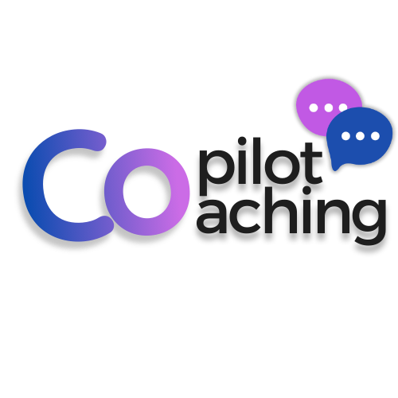
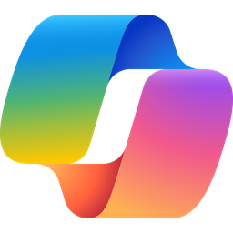
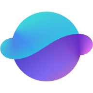
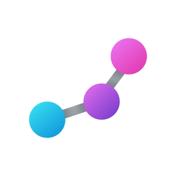
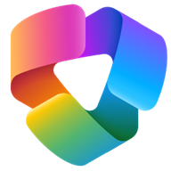
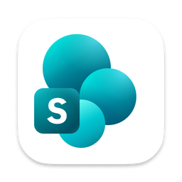
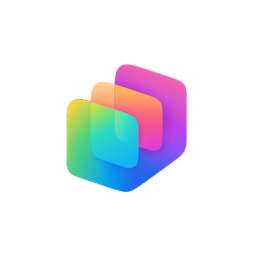
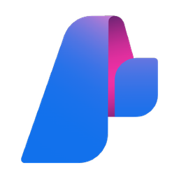

Microsoft 365 Copilot · Cowork · Agent Builder · SharePoint Agent · Copilot Studio · Microsoft Foundry — 31 Fälle mit Spickzettel
Entscheide zuerst: In Microsoft 365 Copilot fertig nutzen (Prompt, Researcher, Analyst oder Copilot Cowork) – oder einen Agenten selbst bauen (Agent Builder, SharePoint Agent, Copilot Studio, Microsoft Foundry)? Die Beispiele sind bewusst extrem, damit die Grenzen jeder Plattform klar werden. Der Spickzettel ganz unten erklärt jede Option mit offizieller Quelle.
Mit den Pfeiltasten ← → blättern.
Funktionen, Grenzen und wann du was nimmst – je Punkt aufklappen. Jeweils mit offizieller Microsoft-Quelle.

Einfacher Prompt · Microsoft 365 Copilot Chat✅ Funktionen
⛔ Grenzen
🎯 Wann
🔗 Quelle: learn.microsoft.com – Was ist Microsoft 365 Copilot?

Researcher-Agent (fertig in M365 Copilot)✅ Funktionen
⛔ Grenzen
🎯 Wann
🔗 Quelle: learn.microsoft.com – Researcher-Agent in Microsoft 365 Copilot

Analyst-Agent (fertig in M365 Copilot)✅ Funktionen
⛔ Grenzen
🎯 Wann
🔗 Quelle: learn.microsoft.com – Analyze and visualize data with the Analyst agent

Copilot Cowork · der agentische KI-Kollege✅ Funktionen
⛔ Grenzen
🎯 Wann
🔗 Quelle: learn.microsoft.com – Copilot Cowork (häufige Fragen)
✅ Funktionen
⛔ Grenzen
🎯 Wann
🔗 Quelle: learn.microsoft.com – Agent Builder · Wissensquellen & Limits

SharePoint Agent · Q&A auf einer Site✅ Funktionen
⛔ Grenzen
🎯 Wann
🔗 Quelle: support.microsoft.com – Erste Schritte mit Agents in SharePoint

Copilot Studio · Low-Code, Aktionen & Autonomie✅ Funktionen
⛔ Grenzen
🎯 Wann
🔗 Quelle: learn.microsoft.com – Overview Microsoft Copilot Studio

Microsoft Foundry · Pro-Code für Entwickler✅ Funktionen
⛔ Grenzen
🎯 Wann
🔗 Quelle: learn.microsoft.com – What is Microsoft Foundry Agent Service?